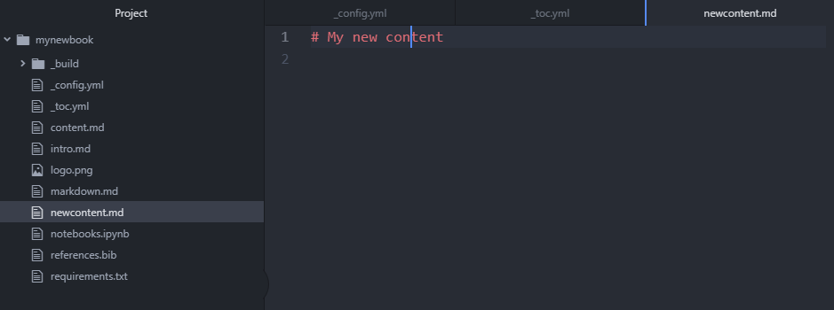

Introduction¶
This is written to guide you through publishing your book online with jupyter-book and hosting it on github. I wrote this guide as an exercise for me to get familiar with the jupyter-book library. At the same time it serves a note for myself. This guide is based on information from jupyterbook for more information please refer to the link.
Steps to Write a Jupyter Book¶
This section provides step by step guide to publish your book. I will start with the installation requirement. I am using a Windows machine for executing the steps, if you are using either a Linux or MacOS machine, there might be slight differences to the result. Please refer to the original guide if you run into any issue with your machine.
Installation¶
Install the Anaconda Individual Edition
a. Download the Anaconda Individual.
b. Install the Anaconda Individual.Once Anaconda is installed. Create an environment called “jupyterbook” for installing the required libraries. This isolate all changes to within a Python environment.
a. Create an environment with the following command:conda create --name jupyterbook
Install Jupyter Book in the environment created.
a. Activate the environment with the following command:conda activate jupyterbook
b. Install Jupyter-Book with the following command:
pip install -U jupyter-book
Create a Book Template with Jupyter-book¶
Change your directory to where you want to store your book content.
cd specify_your_dir_here/
Create a template book with this command.
jupyter-book create mynewbook/
Go into the “mynewbook” folder. You will see the files shown below. Figure 1
Fig. 1 Structure of a template book¶
Build the book with the following command. If the build is successful, you will see the message shown in Figure 2.
jupyter-book build mynewbook
Fig. 2 Success message of a build¶
Go to mynewbook -> _build -> html -> index.html. Double click on the index.html. You will be able to view the book in your default browser as shown in Figure 3.
Fig. 3 Successful build of a book viewed in the browser¶
{kind=link}
{kind=link}
Edit the Book¶
Use a text editor to edit the files. I am using atom. Download Atom here
Open Atom and add the mynewbook folder. Figure 4
Fig. 4 The open screen of Atom¶
Once added you will be able to see the structure of the book in Figure 5.

Fig. 5 The folder structure of the book in Atom IDE¶
To change the title of the book, go to the “_config.yml” file. Change the title of the book from “My sample book” -> “My notebook”. Change the author to your name (Figure 6). Save the change. Build the book with the command from the 4th Step of Create a Book Template with Jupyter-book.

Fig. 6 Editing the _config.yml file¶
a. The result of the change (Figure 7).

Fig. 7 Result from editing the _config.yml¶
Next I will make changes to the _toc.yml. This file controls the table of content on the left side of the screen. I will add a new file and some content to the file.
a. I add a new file called newcontent as shown in Figure 8. Remember to save the change and then build the book again.Fig. 8 Editing the _toc.yml file¶
b. With Atom add a file called “newcontent.md” as shown in Figure 9. Add in the title “# My new content”.
Fig. 9 Create a newcontent.md file¶
c. Build the book. You will be able to see the change as shown in Figure 10

Fig. 10 Result of adding a newcontent.md file¶
Add Figure in your book¶
Add a new folder “_static” in the book folder as shown in Figure 11.
Fig. 11 Add a _static folder¶
a. Put a afigurefile.png file into the folder as shown in Figure 12.
Fig. 12 Add a figure in the _static folder¶
Go to the “newcontent.md” file. In the file add the following line to add the figure into the page as shown in Figure 13.
```{figure} /_static/afigurefile.jpg :name: add_figure Add a figure in the _static folder ```Fig. 13 Add a the command in the “newcontent.md” file¶
a. Build the book. You can see the result on your browser.
Fig. 14 Result of adding the figure onto the page¶
You can reference the figure in your text with the following command in the “new_content.md” file as shown in Figure 15.
{numref}`Figure %s <add_figure>`Fig. 15 Reference the figure in your text¶
a. Build the book. You can see the result in your browser.

Fig. 16 Referencing your figure in your text.¶
{kind=link}
Reference to Other Documents, Hyperlink and Folder Structure¶
You can reference to other documents in the book by using this command.
{doc}`020steps`You can create a hyperlink with this command.
[text that will appear in content](https://the-hyperlink.com)
You can move the documents to a “docs” folder for a cleaner folder structure. You just have to specify the files in the “_toc.yml” file as “docs/file”. This is shown in Figure 17
Fig. 17 You can restructure your book folder as shown¶
Adding a Citation¶
You will need to have a “reference.bib” file in your book folder.
You can add a citation with this command
{cite}`chen_exploring_2020`You can generate the bibliography with this command. Remember to specify the right path to the .bib file. If the .bib file is in the previous folder specify it as “../references.bib”
``` {bibliography} references.bib ```
Bibliography¶
- CTM+20
Kian Wee Chen, Eric Teitelbaum, Forrest Meggers, Jovan Pantelic, and Adam Rysanek. Exploring membrane-assisted radiant cooling for designing comfortable naturally ventilated spaces in the tropics. Building Research & Information, pages 1–13, November 2020. Publisher: Routledge. URL: https://doi.org/10.1080/09613218.2020.1847025, doi:10.1080/09613218.2020.1847025.
Publish your Book on Github¶
Register a Github account
Once registered. Create a new repository as shown (Figure 18).

Fig. 18 Create a repository on Github¶
For people who are not comfortable with CMD terminal. Download Github Desktop. The rest of the steps assumed you are using github desktop.
Clone the repository you just created onto your local computer as shown in Figure 19.

Fig. 19 Clone the repository from github using github desktop¶
Copy and paste your book folder into the local repository. Now on github desktop you will see all the changes. “Commit to main” and then “Push Origin”. You will see your repository populated with all your files.

Fig. 20 Commit and sync the files onto the github repository¶
Install ghp-import to compile and host your book on Github-pages. Go to your anaconda environment and activate your jupyterbook environment as shown here Installation. Once you activated the environment, execute this command.
pip install ghp-import
Go to the settings of your github repository. Turn on gh-pages, set your branch to gh-pages and folder to /root as shown in Figure 21.

Fig. 21 Turn on the gh-pages settings on your repository.¶
Once that is done. On your local computer, cd to your book folder (the folder should contain the _build directory) and execute the following command.
ghp-import -n -p -f _build/html

Fig. 22 Successfully executed ghp-import.¶
Generate PDF¶
Install pyppeteer with the following command.
pip install pyppeteer
Then build your book with the following command.
jupyter-book build mybookname/ --builder pdfhtml